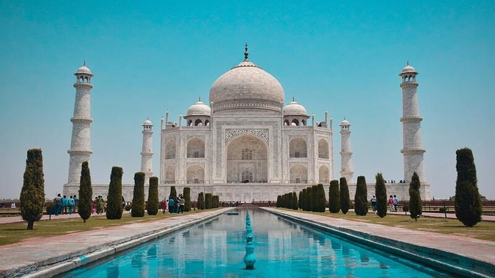

Historical Places of India
1. Amber Fort, Jaipur
Known as one of the most appealing and famous monuments of India, this fortress of Jaipur, the Amber Fort is one of those noteworthy places in Jaipur that you shouldn’t miss. It was developed by Sawai Jai Singh and addresses the ideal illustration of extraordinary design and insides. The fortress offers numerous attractions to its guests including Sheesh Mahal, Jal Mandir, Diwan-I-Aam, and Khaas which leaves the guests entranced with its magnificence. Even though I belong to the Pink City, having visited the Amber Fort many times, I still find it a new mystery to reveal every time I go there. No wonder it is among the top historical monuments of India.
2. Jantar Mantar, Jaipur
The Jaipur astronomical observatory, Jantar Mantar—thought to have been built by the enlightened ruler Sawai Jai Singh II in 1729—is one of the world's most accurate pre-modern observatories, and attests eighteenth-century efforts to improve understanding of planetary and other cosmic movements.
Not at all like the numerous other memorable landmarks of Jaipur, the Jantar Mantar is one of those noteworthy and most visited monuments in India, which actually remain as running proof for the magnificence of the astounding and eminent antiquated work.
One of the most visited historical buildings in India, this landmark was implicit the year 1727 and work date, it is perhaps the most well-known vacation spot. You can observe the spot found extremely close to the city royal residence of Jaipur.
3. Taj Mahal, Agra


Meet the Boss of historical Places in India – one of the seven wonders of the new world as well as the UNESCO World Heritage site, the Taj Mahal will consistently be positioned highest in the rundown of the top recorded historical places of India. Investigate a definitive exemplification of adoration, the Taj Mahal, whose greatness stays unparalleled in history and today this is one of the ends of the week escapes from Delhi.
This lavish white marble structure was designed to be worked in 1632 by Shah Jahan for his late spouse Mumtaz Mahal. It took around 22 years to finish this wonderfully designed Mausoleum. As per the legend, it was accepted that Shah Jahan cut off the hands of the relative multitude of laborers who fabricated the Taj Mahal so that no comparative landmark could ever be assembled again. The Taj Mahal is the pride of the nation among the national monuments of India.
4. Rani Ki Vav, Gujarat
Quite possibly one of the most neglected recorded spots in India, this stepwell was implicit in the eleventh century AD, as a memorial for King Bhimdev of the Solanki administration by his significant other Queen Udayamati. You will feel like a subterranean insect descending an ant colony when you investigate the Rani ki Vav stepwell as it is a monstrous design that is around 24 meters deep.
The most reduced level of the stepwell was before being utilized as a course to disappear to adjoining towns. The focal level has the subject Dasavatars which implies 10 manifestations of Vishnu, and that when you approach the water level there will be a model of Lord Vishnu leaning back on 1,000 snakeheads. It is one of the most lovely places to visit in Gujarat and it was an amazing experience to explore the same.
5. Humayun's Tomb, Delhi
The final resting spot of Mughal Emperor Humayun ends up being a rich castle and famous monuments of India…more than just being a burial chamber. Situated in New Delhi, Humayun Tomb is one of the most incredible safeguarded Mughal landmarks and most visited monuments in India. This catacomb is likewise the first and best illustration of Mughal design in the country. Following a century from its development, Humayun’s burial place propelled the development of the well-known Taj Mahal.
6. Kumbhalgarh Fort, Rajasthan

One more renowned fortification in Rajasthan, the Kumbhalgarh is popular for the glorious fortress just as the natural life asylum and one of the best historical monuments of India. Worked by King Kumbha, it falls under the consideration of the locale of Rajsamand. It is additionally just 82 km from Udaipur, making it an extraordinary road trip in case you are in the city.
It is a significant vacation destination because of the glorious design of the royal residence. You will be astounded to realize that the walls of Kumbhalgarh are the second-longest on the planet after the Great Wall of China; thus no wonder among the national monuments of India.
7. Bhimbetka Rock Shelters, Madhya Pradesh
Bhimbetka Rock Shelters in Madhya Pradesh are an archaeological site tracing all the way back to the ancient age and one of the well-known historical spots in India. These ancient places in India, safeguard confirmations of the Stone Age in the type of antiquated cavern canvases.
The works of art are accepted to be around 30, 000 years of age. However the presence of Bhimbetka caves traces all the way back to quite a while, they were found uniquely in 1957.
In 2003, Bhimbetka was perceived as a UNESCO World Heritage Site. There are around 500 caverns and rock shields that assist it with fitting the bill for the Best Historical Places in India
8. Qutub Minar, Delhi

Built in the era of Qutub-ud-Din Aibak, Qutub Minar isn’t just a significant milestone of Delhi but also addresses the rich design heritage of India. This 73m high pinnacle is superb in size and is wonderful in view, and no wonder one of the most visited historical buildings in India. The pinnacle was worked by Aibak after the last Hindu ruler was crushed and is figured to be worked to praise the start of the Mughal rule in India. At the foot of the pinnacle is the Quwwat-ul-Islam Mosque, which is accepted to be the first mosque to be underlying Quite a while.
The fundamental mosque contains an inward and external patio, which is enriched with shafts and encompassed by columns. The greater part of these shafts is from the Hindu sanctuaries, which were obliterated to build the mosque. It is, subsequently, not unexpected that the Muslim mosque has average Hindu ornamentation. Near the mosque is one of Delhi’s most acclaimed collectables, the Iron Pillar – one of the legendary Historical Places in India.
9. India Gate, Delhi
One of the top historical buildings in India, the India gate is situated on the Rajpath and was designed by Sir Edwin Lutyens. Committed to the 82,000 troopers of both Indian and British drop who battled in World War One and 13,300 fighters who were martyred in the Third Anglo-Afghan War, it was completed in 1931.
Consistently, the Republic Day Parade is held here. It is one of the most popular monuments in India among the local people as well as the vacationers. This 42-meter landmark is regularly contrasted with the Arch de Triomphe in Paris and the Arch of Constantine in Rome..
10. Ajanta & Ellora Caves, Aurangabad
One of the most eye-catching spots in India would be Ajanta and Ellora Caves. Tracing all the way back to the second century BC, these caverns are the impression of the way of life of early men in the country. These stone-cut caverns boast rich models and divider artworks. Ajanta Caves can for the most part be alluded to as Buddhist caverns while Ellora Caves can be called Hindu, Jain, and Buddhist caverns. Ajanta and Ellora Caves are among quite possibly the most all-around saved landmarks and top-visited ancient places in India.
Since India is an immense country, it makes it hard to choose which of the most visited monuments in India to visit at priority among so many. The nation is so rich and has various historical monuments of India. So start with these, till I share the next list of mine! Bon Voyage!